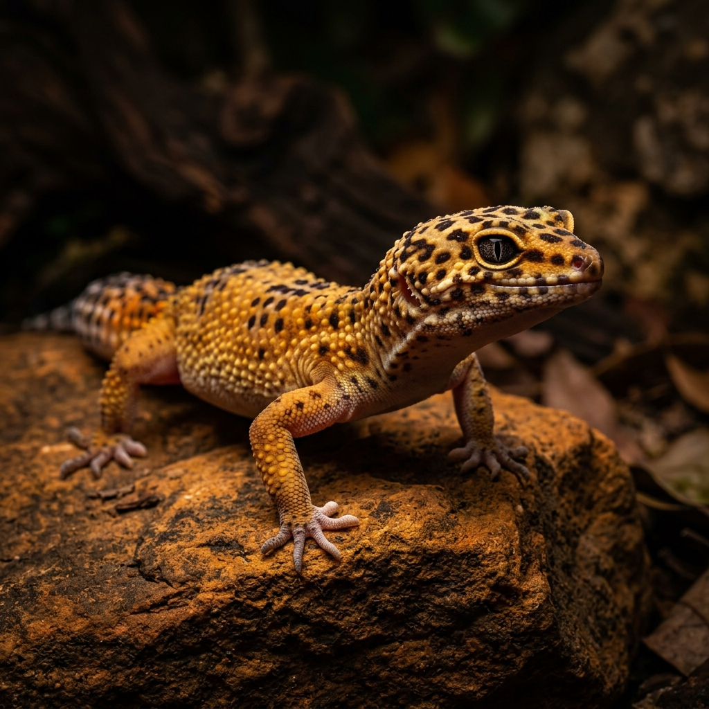
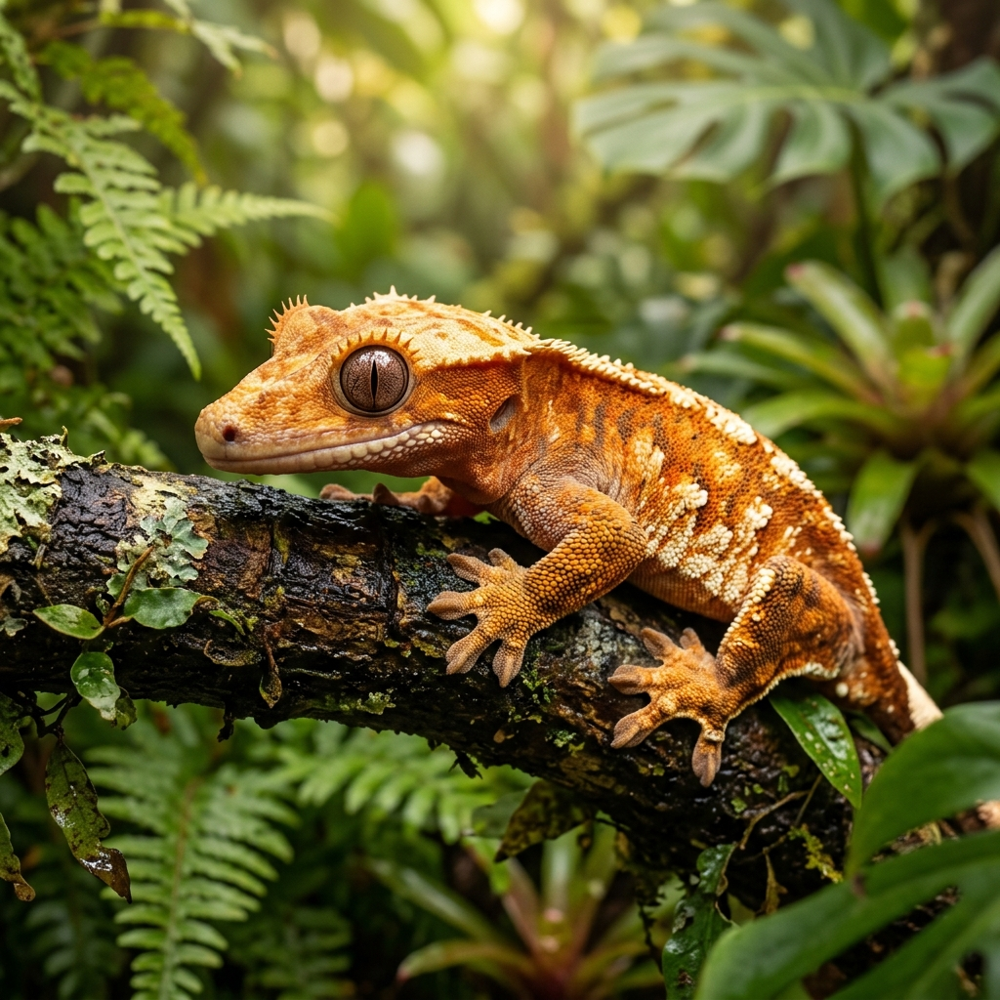
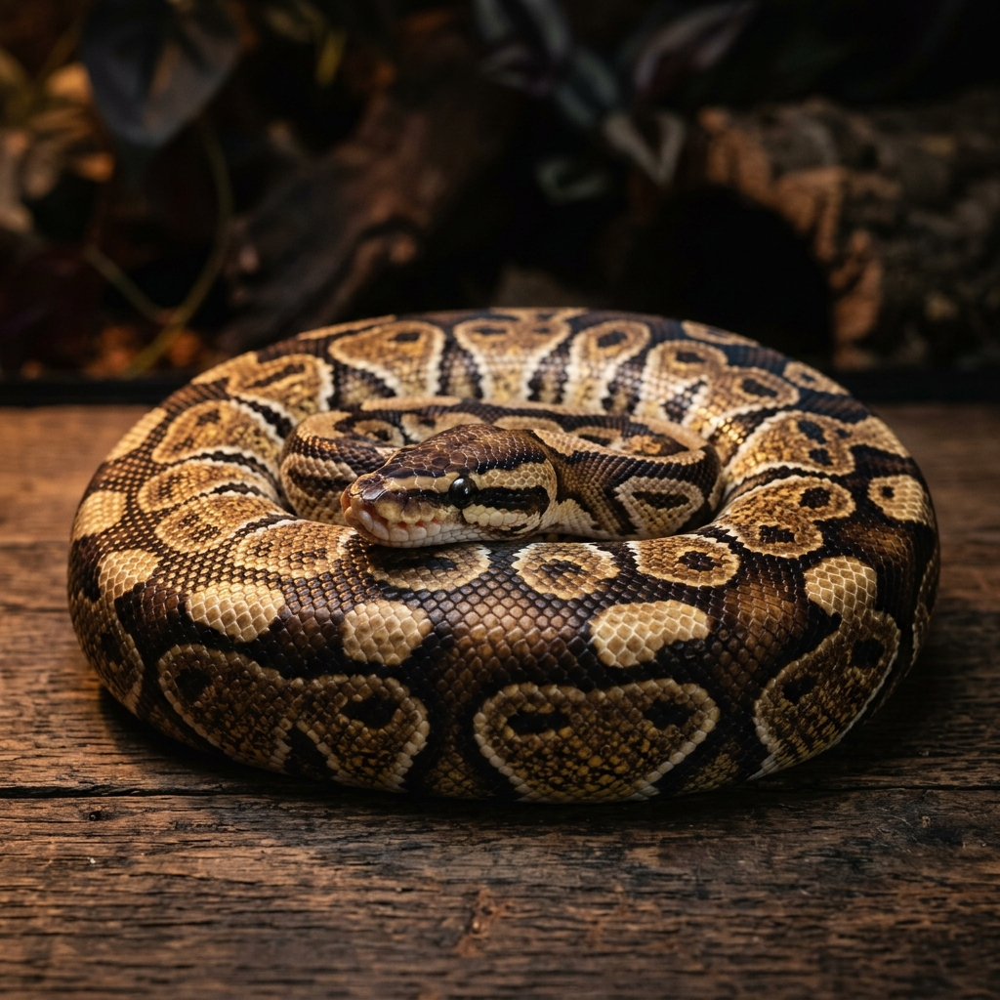
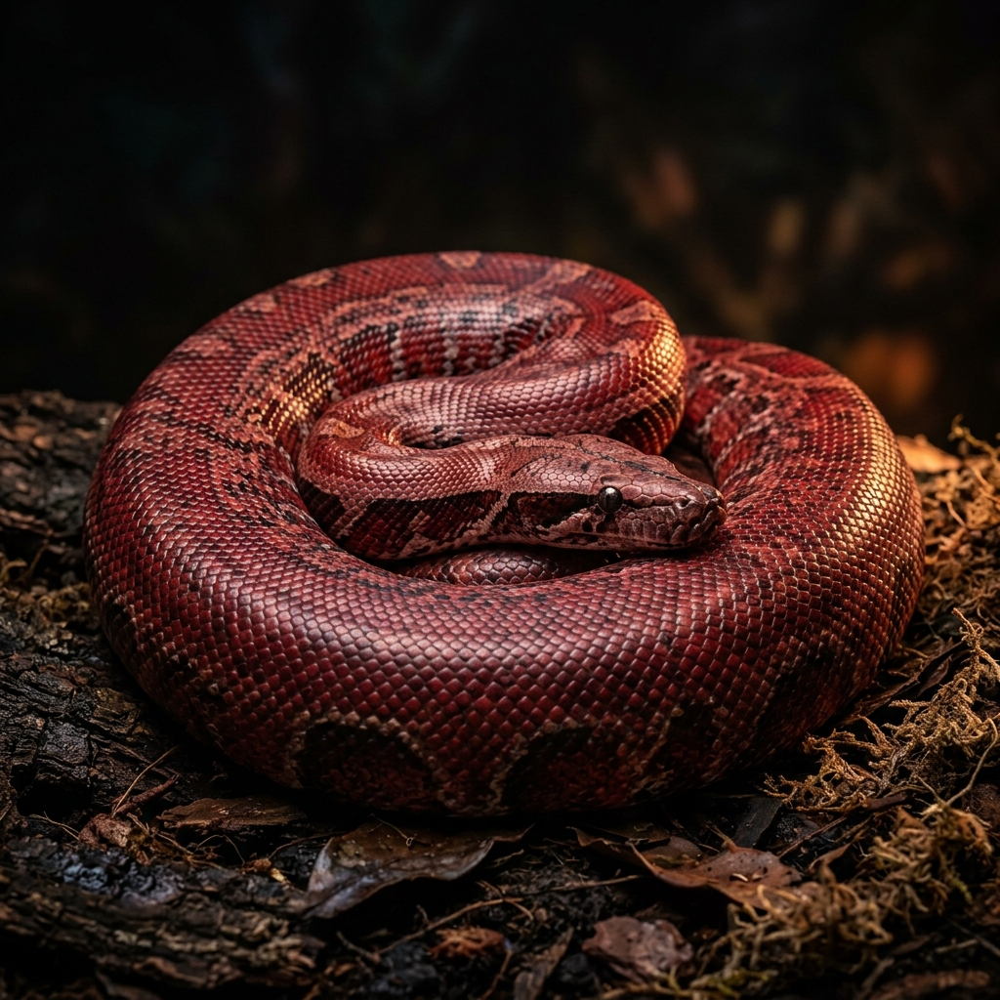
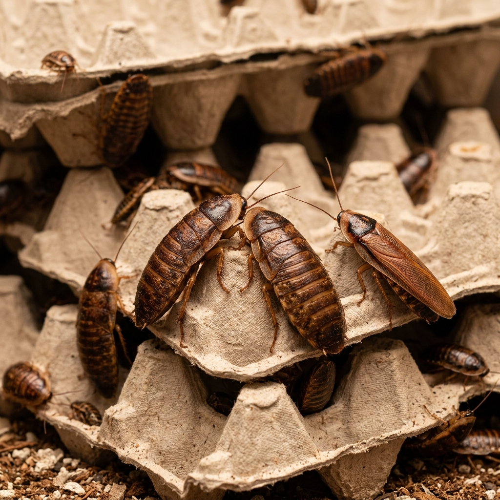
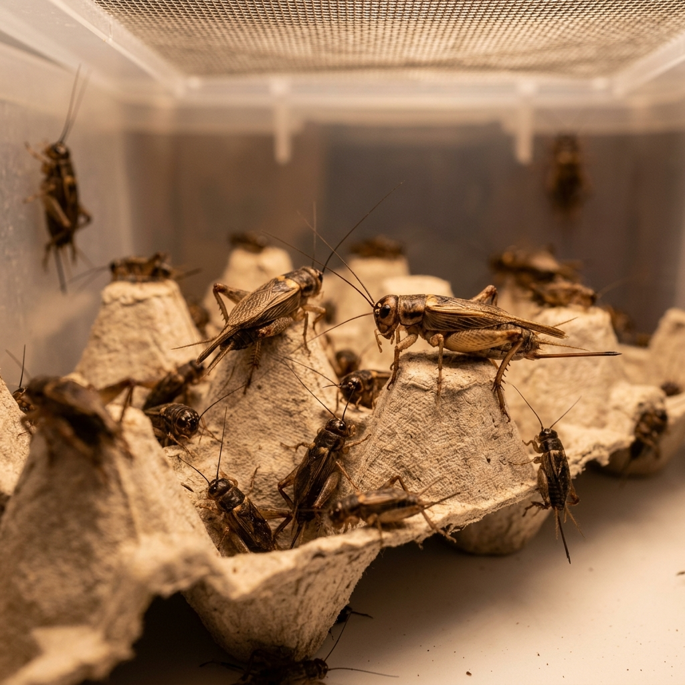
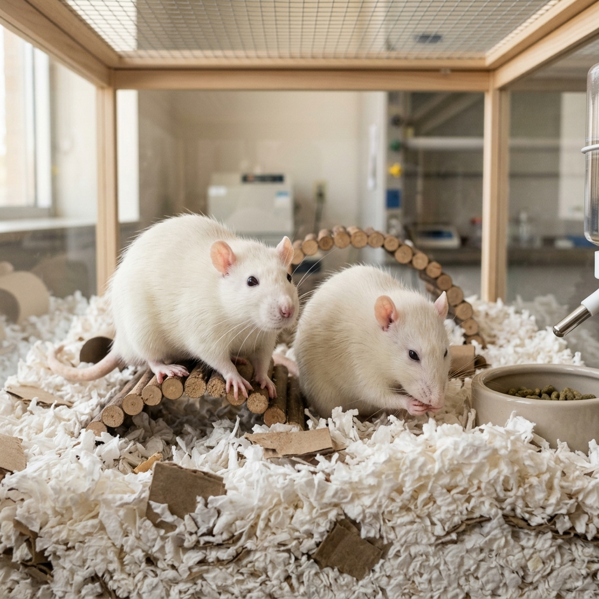

01
Reptile
Leopard Gecko
Eublepharis macularius
Beginner-friendly crepuscular gecko from South Asia. Hardy and docile when kept correctly.
Full Care Guide →Research-backed husbandry guides for reptiles and feeder colonies. Built for new keepers, adopters, and rescue partners.
Comprehensive care guides for every animal in our rescue

Eublepharis macularius
Beginner-friendly crepuscular gecko from South Asia. Hardy and docile when kept correctly.
Full Care Guide →
Correlophus ciliatus
Arboreal gecko from New Caledonia. Thrives at room temperature — heat-sensitive species.
Full Care Guide →
Python regius
Docile, shy python from West Africa. One of the most popular pet snakes worldwide.
Full Care Guide →
Python brongersmai
Heavy-bodied python from Southeast Asia. Heat-sensitive with a misunderstood temperament.
Full Care Guide →
Blaptica dubia
Premier feeder insect. High protein, low chitin, easy to breed and gut-load.
Colony Guide →
Acheta domesticus
Classic feeder insect. Active movement triggers strong feeding response in reptiles.
Colony Guide →
Rattus norvegicus
Complete whole-prey nutrition for snakes. Ethical care is non-negotiable.
Colony Guide →Everything you need to know about keeping these animals healthy and thriving
Eublepharis macularius
Crepuscular, terrestrial gecko native to the arid regions of South Asia (Afghanistan, Pakistan, India). Hardy and docile — one of the best beginner reptiles when kept with modern husbandry standards.
Correlophus ciliatus
Arboreal, nocturnal gecko endemic to New Caledonia's tropical rainforests. Once believed extinct, rediscovered in 1994. Thrives at room temperature — one of the most heat-sensitive reptile species in the hobby.
Python regius
Docile, nocturnal python native to West and Central Africa's savannas and grasslands. One of the most popular pet snakes worldwide, known for curling into a defensive ball when stressed. Can live 20–30+ years.
Python brongersmai
Heavy-bodied python from Southeast Asia's tropical lowlands — marshes, swamps, and forest floors. One of the heaviest pythons relative to length (15–30+ lbs). Historically misunderstood as "aggressive" — captive-bred animals are often calm and docile.
Breeding and maintaining healthy feeder colonies for your reptiles
Blaptica dubia
Premier feeder insect — high protein (~22%), low chitin, good meat-to-shell ratio. Don't fly, can't climb smooth surfaces, don't chirp, minimal odor. Available in a wide range of sizes from nymph to adult.
Acheta domesticus
Classic feeder insect — high protein (~20%), active movement triggers feeding response. Higher chitin than dubias. Must be dusted with calcium and gut-loaded. Note: consider Gryllodes sigillatus (Banded Cricket) as a virus-resistant alternative.
Rattus norvegicus
Complete whole-prey nutrition — protein (~58% dry), fat (~28% dry), calcium from bones. No supplementation needed for snakes fed whole prey. Available sizes from pinky (~5g) to jumbo adult (500g+).
This information represents current husbandry consensus and is meant as a solid baseline for responsible care. Individual animals may have specific needs based on age, health, genetics, and history. When in doubt, consult an experienced keeper or reptile-savvy veterinarian. This page is a living document and may be updated as standards evolve.